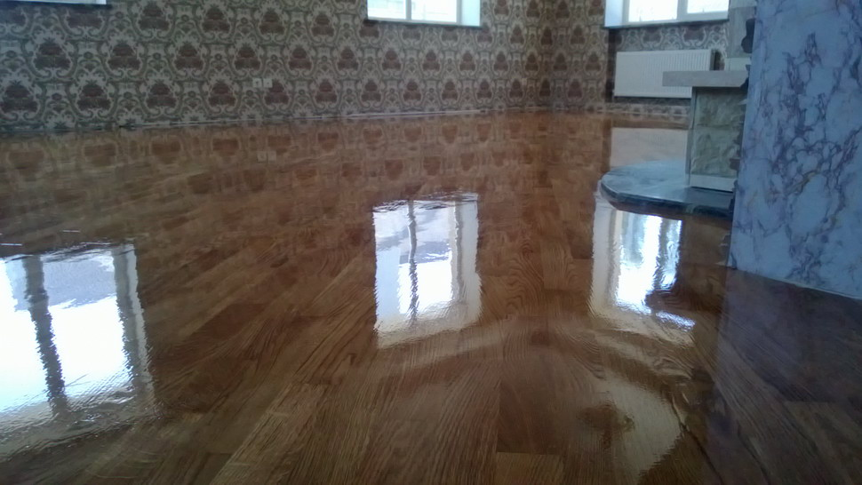
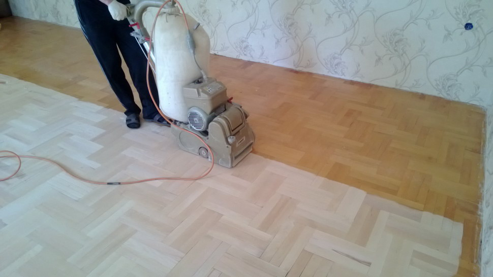

|
Мы работаем с материалами и техникой лучших европейских производителей, чьё качество подтверждено мировой практикой использования |
Мы ценим индивидуальный подход к каждому клиенту и оказываем услуги в удобное время в нужном Вам месте |
Мы оперативно выполняем работу любого объема, уделяя внимание мельчайшим деталям |
Команда профессионалов компании будет рада помочь Вам в удобное время в нужном месте. Мы отреставрируем всю площадь паркета в сжатые сроки или возьмемся за его штучный ремонт, сохранив фактуру материала. Бережный уход за Вашим паркетом обеспечат материалы и техника лучших европейских производителей, чьё качество подтверждено мировой практикой использования.
Вы только присматриваете напольное покрытие? Дизайнеры по интерьеру помогут Вам подобрать правильную фактуру и найти цветовое решение, выгодно подчеркивающее Ваш интерьер. Мы не только восстановим Ваш старый паркет, но обязательно расскажем, как поддерживать его в хорошем состоянии. У Вас есть вопросы или предложения по работе? Пожалуйста, направьте нам письмо по адресу указанному выше, позвоните специалисту по телефону или оставьте онлайн-заявку, и мы перезвоним в удобное для Вас время. Существует немало вопросов на тему: «как восстановить паркет в помещении? Зачем заново делать циклёвку и лакировку паркета, может просто заново постелить напольное покрытие?» Конечно, всё относительно и нужно в данном вопросе ориентироваться по оценке состояния пола в помещении. Если под ногами скрипучие доски, старые плиты, бетон с буграми и выбоинами, то естественно, предстоит большая работа по подготовке к покрытию паркетом, да и ламинитом тоже. Новая стяжка, шлифовка и прочие бетонные работы станут первоочередной задачей. Но если в помещении постелен добротный вьетнамский паркет, немного скрипучий, но всё же довольно сносно сохранившийся, то есть возможность его восстановить, сэкономив на этом приличные средства. Работы по восстановлению паркета в Ростове-на-Дону всегда начинается с циклёвки пола. Следует сказать, что перед работами по циклёвке паркета, нужно пройтись шпаклёвкой по всем щелям между планками, чтобы закрепить положение последних.  Далее потребуется циклевальная машина барабанного типа. Она шлифует паркет с помощью шкурки (наждачной бумаги), которая крепится на барабане и при скоростном вращении снимает тонкий слой древесины, въевшуюся пыль, грязь и остатки шпаклёвки с поверхности пола. Такие машины выполняют первичную обработку паркета, которой, впрочем, часто бывает достаточно. Циклевальная машина потребляет мощность более 2кВт и по этому в квартире должна быть розетка и предохранители в щитке рассчитанные на ток 12-16А. Первичная обработка подразумевает тройной проход поверхности машиной с разным калибром наждачной бумаги от крупнозернистой до мелкозернистой. Сначала пол шлифуется наждачной бумагой зерном 24, после 40 и, наконец, с зерном 100. Это обеспечивает безупречную гладкую поверхность паркета. Циклевальная машина может проходить всю площадь пола, но углы, узкие полоски вдоль стены остаются неотшлифованными. Здесь на помощь приходит шлифовка с помощью специальной углошлифовальной машинки с подключённым к ней пылесборником, обычно это промышленный пылесос. Нельзя допустить распыление стружки на обработанные поверхности. Это довольно трудоёмкий процесс, требующий точности, глазомера мастера и, конечно. опыта работы в данной сфере деятельности.